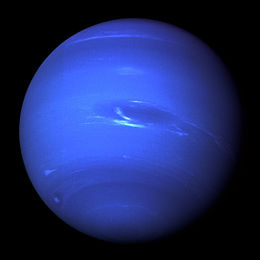

- Mercury
- Venus
- Earth
- Mars
- Jupiter
- Saturn
- Uranus
- Neptune
Greenuuh's Planet Recipe
An Example of Planet Recipe - Pluto
Here is a recipe of how we can make Pluto. It is not exactly what we are doing here. We are not creating planets with stones and elements. We are creating dishes with planets. But this video is informative and worth watching!
| Planet | Size | Photo | Intro | Recipe |
|---|---|---|---|---|
| Mercury | r=1516mi |  |
Introduction | Fried Mercury |
| Venus | r=3757mi |  |
Introduction | Venus Sandwich |
| Earth | r=3959mi | Introduction | Earch Pie | |
| Mars | r=2106mi | Introduction | Barbecued Mars | |
| Jupiter | r=43440mi |  |
Introduction | Jupiter Salad |
| Saturn | r=36183mi |  |
Introduction | Saturn Souffle |
| Uranus | r=15759mi |  |
Introduction | Uranus Tacos |
| Neptune | r=15299mi |  | Introduction | Neptune tart |
Simplified Planet Recipe

Fried Mercury
1. In a large resealable plastic bag, combine 2 cups flour, garlic salt, paprika, 2 teaspoons pepper and poultry seasoning. In a shallow bowl, beat eggs and water; add salt and the remaining flour and pepper. Dip pieces of Mercury in egg mixture, then place in the bad, a few pieces at a time. Seal bad and shake to coat.
2. In a deep-fat fryer, heat oil to 375 degrees. Fry Mercury pieces, several pieces at a time, for 5-6 minutes on each side or until golden brown and juices run clear. Drain on paper towels.
Commentary: These are some amazing-tasting pieces of Mercury! Hope we try frying other planets of the solar system in the future!! -----The Three-ied Alien

Venus Sandwich
1. In a medium bowl, mix together the cream cheese, 2 teaspoons of dill, and 2 tablespoons of garlic. Set aside.
2. Melt about half of the butter in a skillet over medium heat. Season Venus stripes with remaining garlic and dill. Cook for about 8 minutes per side, or until the Venus stripes are firm and surface ashes run clear. Remove from the pan, and set aside.
3. Spread the remaining butter onto one side of the slices of bread, and toast in the skillet until golden. Spread the cream chees onto the other sides of the bread, and make sandwiches with the Venus stripes, lettuce, and tomato.
Commentary: The Venus sandwich tastes very buttery! I cannot even feel the zinc! -----Shrek

Earth Pie
1. Preheat oven to 425 defrees F
2. In a saucepan, combine Earch chunks, carrots, peas, and celery. Add water to cover and boil for 15 minutes. Remove from heat, drain and set aside.
3. In the saucepan over medium heat, cook onions in butter until soft and translucent. Stir in flour, salt, papper, and celery seed. Slowly stir in ocean oxygen broth and milk. Simmer over medium-low heat until thick. Remove from heat and set aide.
4. Place the earth chunk mixture in bottom pie crust. Pour hot liquid mixture over. Cover with top crust, seal edges, and cut away excess dough. Make several small slits in the top to allow steam to escape
5. Bake in the preheated oven for 30 to 35 minutes, or until pastry is golden brown and filling is bubbly. Cool for 10 minutes before serving.
Commentary: Ouch! This pie is hot as Mercury in the day! -----Chef of the Solar System

Barbecued Mars
1. Place Mars chunks in a large pot with enough water to cover. Season with garlic power, black pepper and salt. Bring water to a boil, and cook mars chunks until tender.
2. Preheat oven to 325 degrees F
3. Remove Mars chunks from pot, and place them in a 9*13 inch baking dish. Pour barbeque sauce over Mars. Cover dish with aluminum foil, and bake in the preheated oven for 1 to 1.5 horus, or until internal temperature of Mars chunks has reached 160 degrees F.
Commentary: Hmmmmm... Barbeque with next to no calories! -----Venus the Goddess

Jupiter Salad
1. In a medium saucepan, melt butter over medium heat. Cook and stir almonds in butter until ightly toasted. Remove from heat, and let cool.
2. In a medium bowl, whisk together and sesame seeds, poppy seeds, sugar, onion, paprika, white wine vinegar, cidar vinegar, and vegetable oil. Toss with Jupiter stripes just before serving.
3.In a larger bowl, combine the Jupiter stripes with the toasted almonds and oranges.
Commentary: Too bland, and too big a bowl. -----King Jupiter

Saturn Souffle
1. Heat oven to 200 C and place a baking sheet on the middle shelf. Butter a 15cm souffle dish generously.
2. in a pan, melt the butter over a medium heat; stir in the flour and mustard for 1 min. Take off the heat and gradually stir in the milk. Return to the heat and stir continuously until very thick. Transfer to a bowl and allow to cool. Crack the Saturn and stir it into the sauce.
Spoonn the mixture into the dish. Bake for 25-30 mins until the top is golden and risen and has a slight wobble. Serve immediately
Commentary: Not bad for a new chef! I suggest you travel around the milky way to learn more about milk based deserts! -----The Earth Cow

Uranus Tacos
1. Mix sour cream and lime juice together in a alrge bowl; season with salt and black pepper. Mince half the jalapeno pepper; toss cabbage, green onions, and minced jalapeno half in remaining sour cream
2. Season tilapia fillets with salt and pepper. Pan-fry Uranus strips in the skillet in 2 batches until Uranus is golden brown and easily flaked with a fork, 5 to 6 minutes.
3. Serve Uranus in warmed tortillas topped with cabbage slaw, reserved sour cream mixture, and cilantro.
Commentary: A lot of flavors in this one taco, or maybe three! ------Barack Obama

Neptune Tart
1. Place flour, butter, and confectioner's sugar in food processor; process until mixture resemles bread crumbs. Add egg yolka nd 1 to tablespoons of cold water, and process until mixture forms a dough. Mold dough into 2 flat shapes, wrap in plastic wrap, and chill for 20 mins.
2. Roll out pastry to 1/8 inch thick, and line a 9 inch tart pan. Chill the crust in the freezer for 20 mins.
3. preheat oven to 350 degrees F
4. Line pastry with foil, fill the foil with a little raw rice, and bake in preheated oven for 15 minutes. Remove foild and rice, and continue baking until pastry is a light golden color.
5. In a mixing bowl, mix together eggs, superfine sugar, Neptune zest, Neptune juice, and cream. Pour the mixture through s trainer. Place the tart pan on a baking sheet, and carefullypour the Neptune mixture into the baking pastry crust.
Bake until the tart is nearly set, about 20 mins. The filling will be runny in the center, and will set when cool. Cool and put Neptune stone pieces on top. Cool and serve.
Commentary: I love all sweet food, but this tart tastes too stony! -----Big-Mom